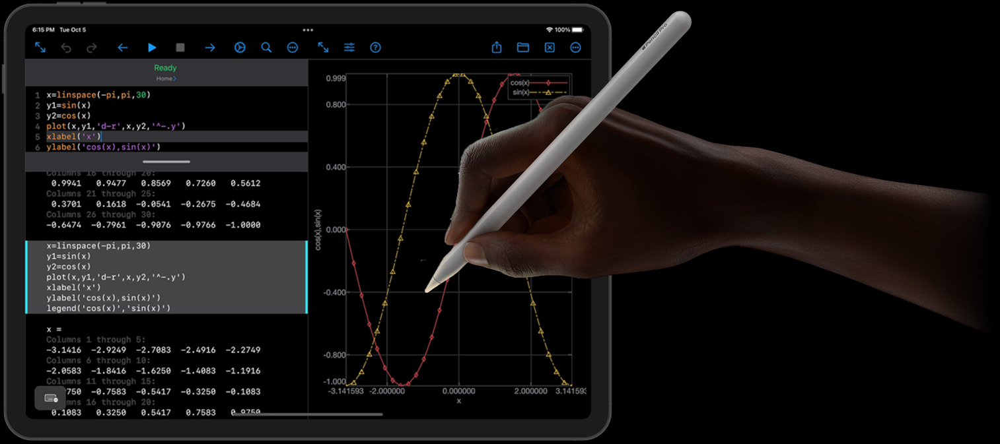

Tools to express yourself.
Customize your MacBook and make it yours.
Drag & drop stickers to arrange
Every Bowdoin student receives a new
MacBook Pro, iPad mini, and Apple Pencil
to support their academic journeys.
Powerful tools for powerful minds.

New students receive all of their new equipment, and set up their two-factor authentication systems, after returning from their Orientation Trips—that's before classes start.
All of the DExC hardware includes AppleCare™, which is administered by Bowdoin's Information Technology department.
If you need to send your equipment for repair, you will be issued a loaner.
The Digital Excellence Commitment is about leveling the playing field for everyone. All students, regardless of aid status, receive this equipment and access to relevant software.
After students complete a short online module in responsible AI ethics, they have access to LibreChat, which provides a single point of access to popular tools like Google Gemini, ChatGPT, Claude, Microsoft CoPilot, NotebookLM, and more.
Librechat ensures that Bowdoin maintains institutional control over data and privacy, so that any institutional or research data is not used to train future models.
Customize your MacBook and make it yours.
Drag & drop stickers to arrange